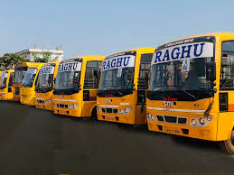
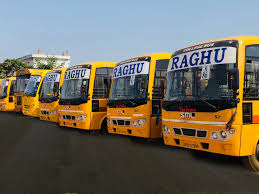
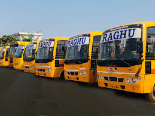
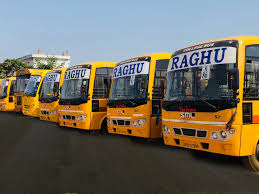

Sri Chaitanya Techo Schools
Vil: Dilsukhnagar M:Sarror Nagar D: RR PinCode:500082
About School Services Buses Fee Details Contact
 



Sri Chaitanya techo Shools have 25 AC Buses, Providig Buses allOver Twincities.. Runs in all Areas and Ways .. Some Text is Missing. For Buses Infrmation Contact 998912856
Sri Chaitanya Techno School is a minor part of an ongoing education scam in Andhra Pradesh by the Sri Chaitanya Educational Group [1]. Since its inception in the mid-80s, the group has been promoting rote learning under the pretext of revolutionizing education in the then state of Andhra Pradesh. Over the years, it has evolved into a behemoth of hundreds of sub organizations that mistreat students, harass them with archaic practices and subject them to unreasonable amounts of stress. Alongside Narayana, its chief competitor, Sri Chaitanya has been running a crippling duopoly in the